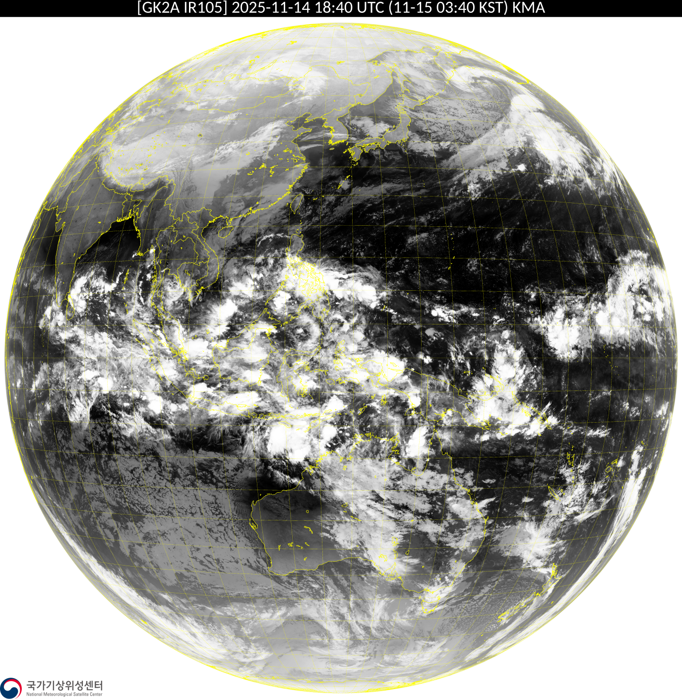
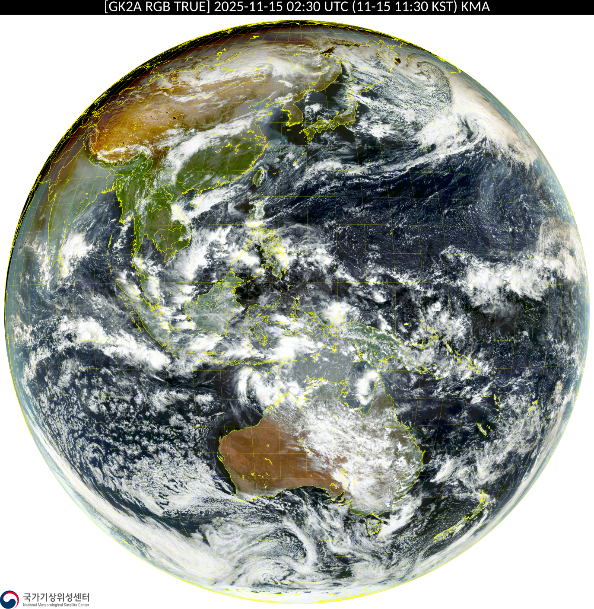

开源 · Python · GPL-3.0
卫星云图，
自动找上门。
每 20 分钟一张，红外增强、全彩、全盘彩色，
定时抓取、自动重试，安安静静跑在你的服务器上。
抓回来的是这样的。
全部来自官方数据源，原图保存、原样归档。



该有的全都有，
不该有的一样也没有。
脚本只做一件事：把云图按时、完整地抓下来。
定时抓取
对齐官方发布节奏：GK-2A 红外在每小时 0/20/40 分，全彩在 10/30/50 分，发布后延迟 20 分钟下载，不扑空。
自动重试
下载失败自动重试，最多 3 次；单张失败进入独立重试队列，最长可向前补抓 30 天的历史云图。
文件校验
下载完成先验 PNG 文件头、再查文件大小，坏图挡在门外，不会污染你的图库。
历史记录
每张图写入独立的 JSON 下载历史，断电重启后接着上次的进度跑，不重复、不遗漏。
独立日志
每个脚本有自己的一套日志，进度条每分钟刷新一次，半夜挂在哪里一眼就能看到。
服务器友好
一条 nohup 命令扔到后台，关掉终端照样跑；保存目录、日志目录随手可改，纯标准库加 requests。
三步跑起来。
需要 Python 3 与一条网络连接，其余的交给脚本。
1
安装依赖
只需要 requests：
pip install requests
2
改好保存目录
打开脚本顶部，把 SAVE_BASE_DIR 和 LOG_DIR 改成你的路径。
3
运行
临时运行，终端关了就停：
python3 /你的路径/GK2A_Infrared_downloader.py或者挂到服务器后台长期运行：
nohup python3 /你的路径/GK2A_Infrared_downloader.py >> /var/log/gk2a.log 2>&1 &